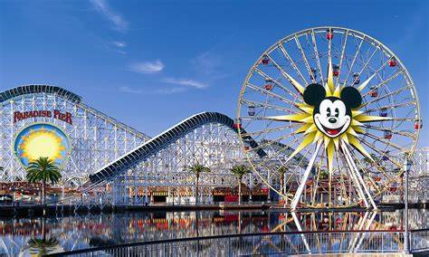
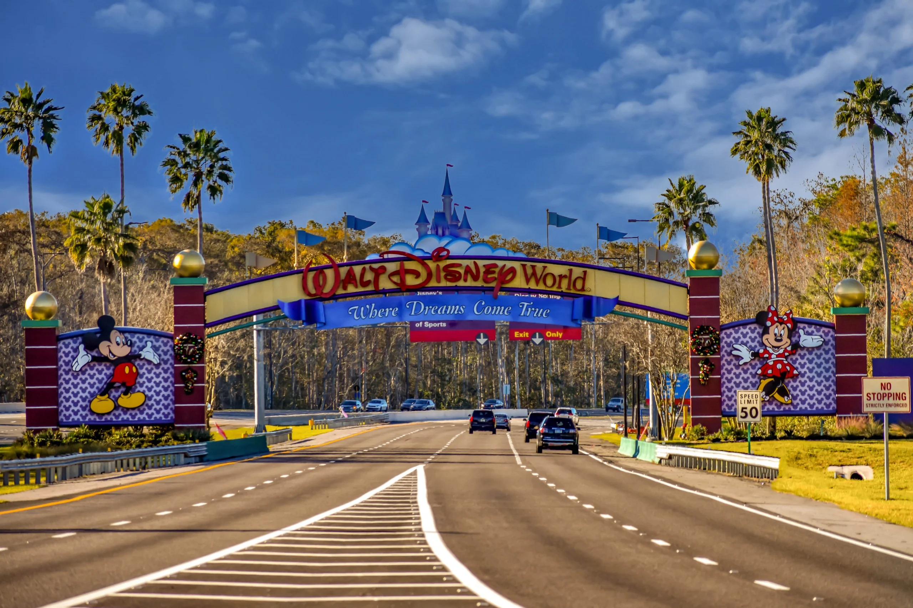
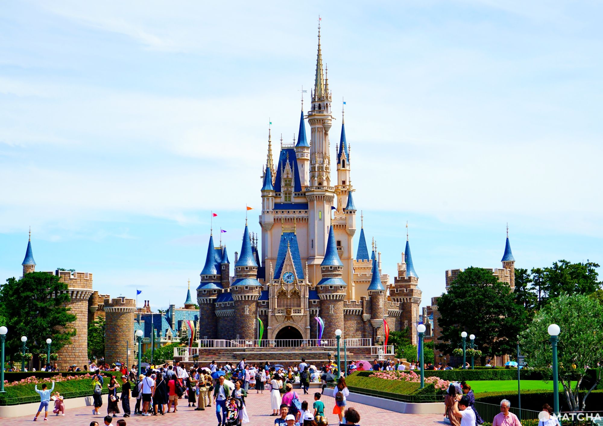
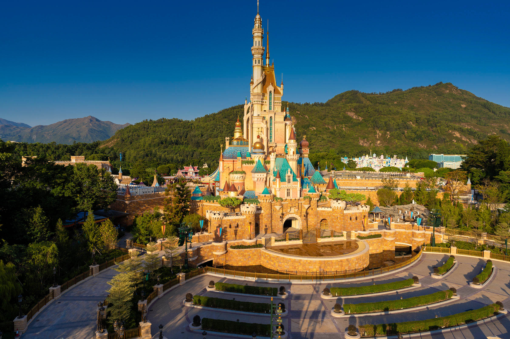
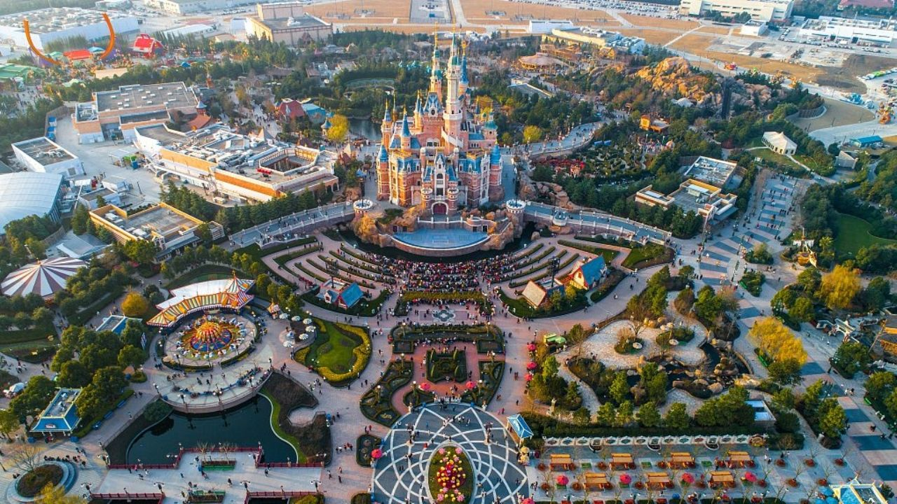

En Savoir Plus
-
1
Disneyland Park
Le premier parc Disneyland, situé à Anaheim en Californie, a ouvert ses portes en 1955. Il est le parc le plus ancien et le plus célèbre de la chaîne Disneyland.
 -
2
Walt Disney World Resort
Le complexe de loisirs Walt Disney World Resort, situé à Orlando en Floride, a ouvert ses portes en 1971. Il comprend quatre parcs à thèmes, deux parcs aquatiques, plusieurs hôtels et un golf.
 -
3
Disneyland Paris
Le parc Disneyland Paris, situé en Île-de-France en France, a ouvert ses portes en 1992. Il est le deuxième parc Disneyland en termes de fréquentation.
.webp)
-
4
Tokyo Disney Resort
Le complexe de loisirs Tokyo Disney Resort, situé à Urayasu au Japon, a ouvert ses portes en 1983. Il comprend deux parcs à thèmes, un parc aquatique et plusieurs hôtels.
 -
5
Hong Kong Disneyland
Le parc Hong Kong Disneyland, situé à Lantau Island à Hong Kong, a ouvert ses portes en 2005. C'est le parc Disneyland le plus petit en termes de superficie.
 -
6
Shanghai Disney Resort
Le complexe de loisirs Shanghai Disney Resort, situé à Shanghai en Chine, a ouvert ses portes en 2016. Il comprend un parc à thèmes, deux hôtels et un golf.

Filmographie
Lee Unkrich est un réalisateur de films d’animations qui travail pour les studios Pixar. Il a réalisé les 4 films Toy Story, Coco, Nemo, Monstre et Cie, Monstre Academy, 1001 Pattes et Le Voyage d’Arlo.
Glossaire
Réchauffement Climatique : réchauffement du climat global de la planète du a l’augmentation du CO2 dans l’atmosphère
Energies Renouvelables : Toutes les énergies qui sont réutilisable a volonté à l’échelle humaine et qui ne polluent pas la planète. Elles sont le contraire des énergies fossiles.
One Piece : Trésor légendaire laissé par le roi des pirates Gold Roger. Personne ne sait ce qu’il contient au point où certain doute de son existance, mais c’est a cause de ce trésor que l’âge d’or de la piraterie à eu lieu. c’est ce trésor qui donne son nom au manga.
Accord de Paris : Accord signé le 12 decembre 2015 par 174 pays dans un objectif commun de réduire les émissions de gaz à effet de serre pour limiter l’augmentation de la température globale de la planète a 1,5°C de plus par rapport a l’ère pré-industrielle.